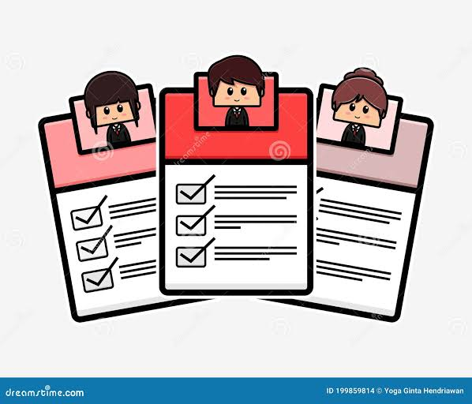

Registros de informação
Por Wagnara
Meu primeiro post
Aqui vou compartilhar informações, registros e conteúdos importantes sobre documentos e organização.
Organização, informação e conhecimento!
Seja bem-vindo ao meu espaço! 💗

Registros de informação
Por Wagnara
Aqui vou compartilhar informações, registros e conteúdos importantes sobre documentos e organização.

Organização de documentos
Por Wagnara
Manter documentos organizados facilita a localização das informações, evita perdas e torna a rotina mais prática.

Gestão de arquivos
Por Wagnara
Criar categorias, separar documentos e identificar pastas são passos importantes para uma boa organização.

Informação e conhecimento
Por Wagnara
Os registros permitem preservar informações importantes e ajudam a manter a história e a memória das organizações.

Tecnologia e organização
Por Wagnara
A digitalização facilita o acesso, o armazenamento e o compartilhamento de documentos.

Cuidados com documentos
Por Wagnara
O armazenamento adequado ajuda a conservar documentos e protege informações que precisam ser consultadas futuramente.

Planejamento e controle
Por Wagnara
Um bom controle documental contribui para a produtividade, a segurança e a eficiência das atividades diárias.